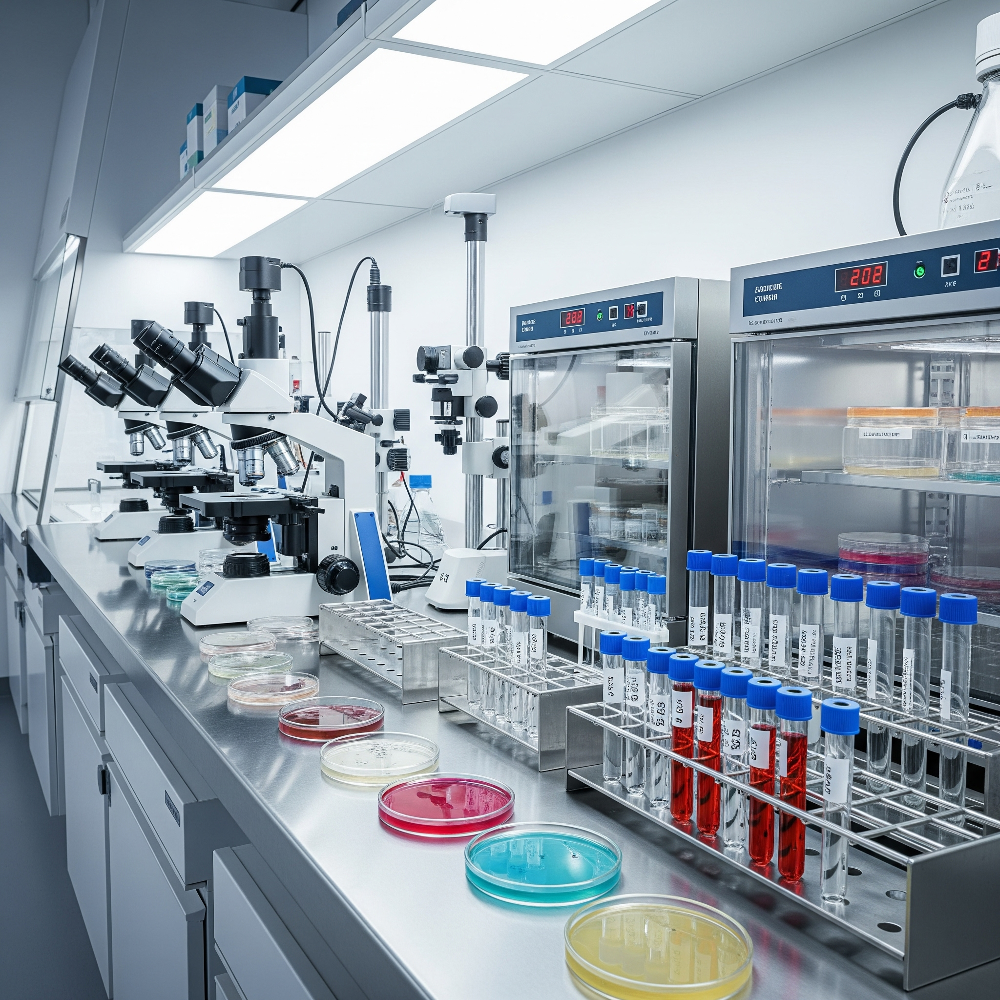

<div class="textcontainer">
<h3>About Adrian Baginski</h3>
<p id="aboutme">
Hi, my name is Adrian Baginski and I'm a first-generation, non-traditional student. I was born and raised in New York, but my family immigrated to the United States from Poland after the collapse of communism in Eastern Europe. I've always been facsinated in how systems work, whether it be biological or physical—and taking this course is an opportunity to experiment a hypothesis of a system by fabricating it in a controlled setting.
</div>
<p class="margin"> </p>
<div class="center-colum">
<img src="./rybnik.jpg" alt="placeholder for you about me image" width="500">
<br></br>
Above is a picture of the market square in Rybnik, Poland where I spent a good amount of time as a child with my grandparents.
<br></br>

<br></br>
After completing my Associate in Science at SUNY Ulster, I transferred into Harvard Extension School to complete the Bachelor of Liberal Arts degree. Previously, I purified RNA in a COVID lab during the pandemic and have worked in a large hospital enterprise in New York. Outside of school, I work in a Microbiology lab at Newton-Wellesley Hospital and I'm currently preparing to sit and become a Chartered Financial Analyst.
<br></br>
<br></br>
I strive to utilize my experiences in wet laboratories and academia to develop into a productive analyst. Thus, this unique perspective will enable me to provide sound advice to institutions that make a difference for society. Thereby, allowing organizations to be in a position to advance their goals or technologies.
<br></br>
</div>